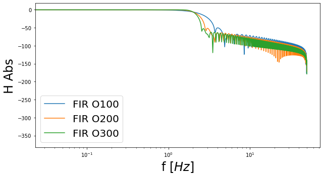

Contents
# -*- coding: utf-8 -*-
"""
Signal processing exam 2023.
Date: 06/01/2023
Author: Umberto Zucchelli
"""
'\nSignal processing exam 2023.\n\nDate: 06/01/2023\nAuthor: Umberto Zucchelli\n'
import numpy as np
from scipy import signal
import pandas as pd
import matplotlib.pyplot as plt
from scipy.signal import butter, filtfilt, get_window, firwin
from scipy.signal.windows import general_hamming
%matplotlib inline
def Diff_1st_order(x,y):
"""
Compute derivatives with first order backward difference approximation:
y'(xi) = (y(xi)−y(xi−1)) / Δx
y''(xi) = (y(xi)−2y(xi−1)+y(xi-2) / Δx^2
For the first point (firsts 2 for the 2nd order derivative),
The forward difference approximation, that mirrors the expression above,
is considered
"""
N = x.shape[0]
delta_x = np.empty(N)
y_prime = np.empty(N) # 1st order derivative
y_prime2 = np.empty(N) # 2nd order derivative
# Forward first order differencing approx
delta_x[0] = x[1] - x[0]
y_prime[0] = (y[1] - y[0]) / delta_x[0]
y_prime2[0] = (y[2] - 2*y[1] + y[0]) / delta_x[0]**2
# Backward first order differencing approx
for i in range(1, N):
delta_x[i] = x[i] - x[i-1]
y_prime[i] = (y[i] - y[i-1]) / delta_x[i]
if i == 1:
y_prime2[i] = (y[i+2] - 2*y[i+1] + y[i]) / delta_x[i]**2
else:
y_prime2[i] = (y[i] - 2*y[i-1] + y[i-2]) / delta_x[i]**2
# In this way the first two elements will be just the opposite of each other
# This problem could be addressed in different ways.
# Some of them:
# 1) Neglect the first term. Since the firsts elements of the series don't measure
# important values
# 2) Since, in fact, we have the datas for t<5s we could consider them to compute the
# backward derivative also at x=t=5s
# To notice:
# I could use simply: dy[0:-1] = np.diff(y)/np.diff(x)
# dy[-1] = (y[-1] - y[-2])/delta_x[-1]
# That would be equal to a forward first order diff approx, except at the last point
# where a backward approach is used.
return y_prime, y_prime2
def Diff_2nd_order(x,y):
"""
Compute derivatives with second order central difference approximation:
y'(xi) = (y(xi+1)−y(xi−1)) / 2Δx
y''(xi) = (y(xi+1)−2y(xi)+y(xi-1) / Δx^2
The derivatives for the 2 points at the edge, is computed with the forward
differencing at the left and the backwards one on the right.
Forward:
y'(xi) = (-y(xi+2)+4y(xi+1)-3y(xi)) / 2Δx
y''(xi) = (-y(xi+3)+4y(xi+2)-5y(xi+1)+2y(xi)) / Δx^2
Backward:
y'(xi) = (y(xi-2)-4y(xi-1)+3y(xi)) / 2Δx
y''(xi) = (-y(xi-3)+4y(xi-2)-5y(xi-1)+2y(xi)) / Δx^2
"""
N = x.shape[0]
delta_x = np.empty(N)
# y_prime = np.gradient(y, x, edge_order=2) # 1st order derivative
y_prime = np.empty(N) # 1st order derivative
y_prime2 = np.empty(N) # 2nd order derivative
# Forward first order differencing approx
delta_x[0] = x[1] - x[0]
y_prime[0] = (-y[2] + 4*y[1] - 3*y[0]) / (2*delta_x[0])
y_prime2[0] = (-y[3] + 4*y[2] - 5*y[1] + 2*y[0]) / delta_x[0]**2
# Central second order differencing approx
for i in range(1, N):
delta_x[i] = x[i] - x[i-1]
if i == N-1:
y_prime[i] = (3*y[i] - 4*y[i-1] + y[i-2]) / (2*delta_x[i])
y_prime2[i] = (-y[i-3] + 4*y[i-2] - 5*y[i-1] + 2*y[i]) / delta_x[i]**2
else:
y_prime[i] = (y[i+1] - y[i-1]) / (2*delta_x[i])
y_prime2[i] = (y[i+1] - 2*y[i] + y[i-1]) / delta_x[i]**2
# To notice:
# To compute the 2nd order difference schemes the pre-implemented python function:
# "gradient" could be considered:
# it uses second order accurate central differences in the interior points and
# second order accurate one-sides (forward or backwards) differences at the boundaries:
# y_prime_2nd = np.gradient(y, x, edge_order=2)
# My function and the gradient function were tested and compared leading to negligible
# differences regarding the first order derivative: max(abs(error)) = 1.6122214674396673e-11
#
# error = abs(y_prime_2nd - np.gradient(y, x, edge_order=2))
# plt.plot(error)
# print(max(error))
return y_prime, y_prime2
# Import data from Excel file
# We consider datas only from t=5s onwards
# For this reason we discard the first 500 values
columns = ['Time','ODS_raw']
n = 500
data_raw = pd.read_excel('Signal_raw092.xlsx',
header=None, skiprows=n+1, names=columns)
print('Dataset starting from t=5s')
print(data_raw)
Dataset starting from t=5s
Time ODS_raw
0 5.00 0.002571
1 5.01 -0.016089
2 5.02 -0.009869
3 5.03 -0.059629
4 5.04 0.070991
... ... ...
1496 19.96 -1.396929
1497 19.97 -1.645729
1498 19.98 -1.850989
1499 19.99 -2.062469
1500 20.00 -2.161989
[1501 rows x 2 columns]
plt.figure()
plt.plot(data_raw.Time, data_raw.ODS_raw)
plt.xlabel('$t \; [s]$')
plt.ylabel('$x \; [mm]$')
/usr/lib/python3/dist-packages/matplotlib/cbook/__init__.py:1402: FutureWarning: Support for multi-dimensional indexing (e.g. `obj[:, None]`) is deprecated and will be removed in a future version. Convert to a numpy array before indexing instead.
ndim = x[:, None].ndim
/usr/lib/python3/dist-packages/matplotlib/axes/_base.py:276: FutureWarning: Support for multi-dimensional indexing (e.g. `obj[:, None]`) is deprecated and will be removed in a future version. Convert to a numpy array before indexing instead.
x = x[:, np.newaxis]
/usr/lib/python3/dist-packages/matplotlib/axes/_base.py:278: FutureWarning: Support for multi-dimensional indexing (e.g. `obj[:, None]`) is deprecated and will be removed in a future version. Convert to a numpy array before indexing instead.
y = y[:, np.newaxis]
Text(0, 0.5, '$x \\; [mm]$')
Compute the velocity and acceleration by differentiating the signal. For the differentiation, pick any finite difference formulation you consider appropriate.
Then, study the frequency content of the three signals (displacement, velocity and acceleration).
What do you see and why?
# Commented lines, to check if the datas where equally spaced in time
# t_check = np.linspace(data_raw.Time[0], data_raw.Time[data_raw.index[-1]], num=data_raw.shape[0])
# error = data_raw['Time'] - t_check
# print(max(error))
# print(min(error))
# The max & min error are equal to the machine error. nevertheless the derivatives are takem
# with the delta_x array made with the difference between two consecutive times
# First and second order derivative (velocity and acceleration) with first order schemes
x, y = np.array(data_raw.Time), np.array(data_raw['ODS_raw'])
y_prime_1st, y_prime2_1st = Diff_1st_order(x,y)
plt.plot(x, y_prime_1st)
[<matplotlib.lines.Line2D at 0x7f9f61f9b370>]
# First and second order derivative (velocity and acceleration) with second order schemes
y_prime_2nd, y_prime2_2nd = Diff_2nd_order(x,y)
plt.plot(x, y_prime_2nd)
[<matplotlib.lines.Line2D at 0x7f9f61ed0df0>]
# TO CHECK
#plt.plot(x, y_prime2_1st)
# plt.plot(x, y_prime2_2nd)
# plt.plot(x, np.gradient(y_prime_2nd, x, edge_order=2))
# plt.show()
# plt.plot(x, y_prime2_2nd)
# plt.plot(x, y_prime2_1st)
# error = abs(y_prime2_1st - y_prime2_2nd)
# print((error))
# PSD Displacement
dt = 0.01 #s
fs = 1/dt # Hz
Nt = data_raw['Time'].shape[0]
Ntseg = Nt
window = 'hann'
Nwelch = Ntseg
f_welch_x, psd_x = signal.welch(data_raw['ODS_raw'], fs, window, Nwelch, Nwelch/2,
axis=0)
f_fft_x = np.arange(Nt//2+1)/Nt*fs
fft_x = np.fft.rfft(data_raw['ODS_raw']*get_window(window, Nt))/np.sqrt(fs*(Nt//2+1))*np.sqrt(8./3.)
y_fft=(np.fft.fft(y)) # * general_hamming(Nt, 0.54) #*get_window(window, Nt))
freqs_fft=freq = np.fft.fftfreq(Nt, d=dt)
fig, ax = plt.subplots(figsize=(9,5))
plt.semilogy(f_fft_x, np.abs(fft_x)**2,label='fft')
plt.semilogy(f_welch_x, psd_x,label='Welch')
plt.legend(fontsize=20)
plt.grid()
plt.tick_params(axis='both', which='major', labelsize=15)
plt.title('PSD Displacement')
plt.xlabel(r'$f$ [Hz]',fontsize=24)
plt.ylabel(r'$PSD_s$ [m$^2$/Hz]',fontsize=24)
plt.tight_layout()
fig, ax = plt.subplots(figsize=(9,5))
plt.semilogy(freqs_fft[:len(freqs_fft)//2],np.abs(y_fft[:len(y_fft)//2])/Nt,label='fft original y')
plt.legend(fontsize=20)
plt.xlabel('f $[Hz]$',fontsize=24)
plt.ylabel('Magnitude [-]',fontsize=24)
#plt.xlim([0, 50])
plt.title('FFT Displacement')
plt.grid()
plt.tick_params(axis='both', which='major', labelsize=15)
plt.tight_layout()
# plt.savefig('Absolute Values_shifted_and_f.png', dpi=100)
plt.show()
fig, ax = plt.subplots(figsize=(9,5))
plt.semilogy(freqs_fft[:len(freqs_fft)//2],np.abs(y_fft[:len(y_fft)//2])/Nt,label='fft original y')
plt.legend(fontsize=20)
plt.xlabel('f $[Hz]$',fontsize=24)
plt.ylabel('Magnitude [-]',fontsize=24)
plt.xlim([0, 5])
plt.ylim([1e-3, 2])
plt.title('FFT Displacement Zoom')
plt.grid()
plt.tick_params(axis='both', which='major', labelsize=15)
plt.tight_layout()
# plt.savefig('Absolute Values_shifted_and_f.png', dpi=100)
plt.show()
# PSD Velocity
f_welch_V, psd_V = signal.welch(y_prime_2nd, fs, window, Nwelch, Nwelch/2,
axis=0)
V_fft=(np.fft.fft(y_prime_2nd))
V_freqs_fft=freq = np.fft.fftfreq(Nt, d=dt)
fig, ax = plt.subplots(figsize=(9,5))
plt.semilogy(f_welch_V, psd_V,label='Welch')
plt.legend(fontsize=20)
plt.grid()
plt.tick_params(axis='both', which='major', labelsize=15)
plt.title('PSD Velocity')
plt.xlabel(r'$f$ [Hz]',fontsize=24)
plt.ylabel(r'$PSD_s$ [(m/s)$^2$/Hz]',fontsize=24)
plt.tight_layout()
fig, ax = plt.subplots(figsize=(9,5))
plt.semilogy(V_freqs_fft[:len(V_freqs_fft)//2],np.abs(V_fft[:len(V_fft)//2])/Nt,label='fft original y')
plt.legend(fontsize=20)
plt.xlabel('f $[Hz]$',fontsize=24)
plt.ylabel('Magnitude [-]',fontsize=24)
#plt.xlim([0, 50])
plt.title('FFT Velocity')
plt.grid()
plt.tick_params(axis='both', which='major', labelsize=15)
plt.tight_layout()
# plt.savefig('Absolute Values_shifted_and_f.png', dpi=100)
plt.show()
# PSD Acceleration
f_welch_acc, psd_acc = signal.welch(y_prime2_2nd, fs, window, Nwelch, Nwelch/2,
axis=0)
acc_fft=(np.fft.fft(y_prime2_2nd))
acc_freqs_fft=freq = np.fft.fftfreq(Nt, d=dt)
fig, ax = plt.subplots(figsize=(9,5))
plt.semilogy(f_welch_acc, psd_acc,label='Welch')
plt.legend(fontsize=20)
plt.grid()
plt.tick_params(axis='both', which='major', labelsize=15)
plt.title('PSD Acceleration')
plt.xlabel(r'$f$ [Hz]',fontsize=24)
plt.ylabel(r'$PSD_s$ [(m/s$^2$)$^2$/Hz]',fontsize=24)
plt.tight_layout()
fig, ax = plt.subplots(figsize=(9,5))
plt.semilogy(acc_freqs_fft[:len(acc_freqs_fft)//2],np.abs(acc_fft[:len(acc_fft)//2])/Nt,label='fft original y')
plt.legend(fontsize=20)
plt.xlabel('f $[Hz]$',fontsize=24)
plt.ylabel('Magnitude [-]',fontsize=24)
#plt.xlim([0, 50])
plt.title('FFT Acceleration')
plt.grid()
plt.tick_params(axis='both', which='major', labelsize=15)
plt.tight_layout()
# plt.savefig('Absolute Values_shifted_and_f.png', dpi=100)
plt.show()
# DA COMMENTARE I RISULTATI
# Exercise 2: FIR or IIR filters
# I choose FIR filtering in order to have a not dipersive relation and to be able to manage the phase lag
# due to the filtering
# Non-causal convolution would have very low (negligible) phase lag. But it needs information from "future"
# points to compute the convolution at a certain time. We don't want to lose information in the last
# points, for this reson NC convolution is not taken into account for this analysis
# Recursive formula, causal convolution (using zero-padding i.e.) or multiplication in freq domain (fft)
# obtain almost identical results (except at the initial BC, where fft is different from the other 2)
# but with a non-negligible phase lag wrt the original signal
# As seen during the SP classes, to solve this problem we can apply the filter twice (once on the filtered
# and flipped signal).
# This would lead to BC problems both at the start and the end of the signal. This problem is adressed in the
# pre-implemented function "filtfilt"
# The choice is then: signal.filtfilt
f_c = 2 #Hz
N_O=100 # this is the order of the filter
h_impulse_100 = firwin(N_O, f_c/fs*2, window='hamming') # f_c/fs*2 is to normalize the results
N_O=200 # this is the order of the filter
h_impulse_200 = firwin(N_O, f_c/fs*2, window='hamming')
N_O=300 # this is the order of the filter
h_impulse_300 = firwin(N_O, f_c/fs*2, window='hamming')
# NOTE: Different windows lead to slightly different results. Hann lead to little overshoot before the
# Negative slope
# This doesn't make much sense. My signal is made of 1501 samples. Using a filter of order 500 is not
# appropriate
N_O=500 # this is the order of the filter
h_impulse_500 = firwin(N_O, f_c/fs*2, window='hamming')
# Plot one : the impulse response
# fig, ax = plt.subplots(figsize=(9,5)) # Create Signal Noisy and Clean
# plt.plot(t_k[0:100],h_impulse_100 ,label='O100')
# plt.plot(t_k[0:300],h_impulse_300 ,label='O300')
# plt.plot(t_k[0:500],h_impulse_500 ,label='O500')
# plt.legend(fontsize=20)
# plt.xlabel('$t_k [s]$',fontsize=24)
# plt.ylabel('$h$',fontsize=24)
# plt.tight_layout()
# plt.savefig('h_impluses_FIR.png', dpi=100)
# plt.show()
# Impulse response very similar to a sinc.
# By construction it will always be symmetric
n_f = Nt
dtheta= 2*np.pi/n_f
#Angular discretization in 0, 2 pi
theta_n_1=np.linspace(0,Nt-1, Nt)*dtheta
# or... angular discretization in -pi, pi:
theta_n_2=np.linspace(0,Nt-1, Nt)*dtheta-np.pi
sys_100 = signal.TransferFunction(h_impulse_100, 1, dt=1)
w_FIR_100, mag_FIR_100, phase_FIR_100 = sys_100.bode(w=theta_n_2)
sys_200 = signal.TransferFunction(h_impulse_200, 1, dt=1)
w_FIR_200, mag_FIR_200, phase_FIR_200 = sys_200.bode(w=theta_n_2)
sys_300 = signal.TransferFunction(h_impulse_300, 1, dt=1)
w_FIR_300, mag_FIR_300, phase_FIR_300 = sys_300.bode(w=theta_n_2)
fig, ax = plt.subplots(figsize=(9,5))
plt.semilogx(w_FIR_100/np.pi*fs/2,mag_FIR_100,label='FIR O100')
plt.semilogx(w_FIR_200/np.pi*fs/2,mag_FIR_200,label='FIR O200')
plt.semilogx(w_FIR_300/np.pi*fs/2,mag_FIR_300,label='FIR O300')
plt.legend(fontsize=20)
plt.xlabel('f $[Hz]$',fontsize=24)
plt.ylabel('H Abs',fontsize=24)
plt.tight_layout()
# plt.savefig('H_FIR_log.png', dpi=100)
plt.show()
fig, ax = plt.subplots(figsize=(9,5))
plt.plot(w_FIR_100/np.pi*fs/2,mag_FIR_100,label='FIR O100')
plt.plot(w_FIR_200/np.pi*fs/2,mag_FIR_200,label='FIR O200')
plt.plot(w_FIR_300/np.pi*fs/2,mag_FIR_300,label='FIR O300')
plt.legend(fontsize=20)
plt.xlabel('f $[Hz]$',fontsize=24)
plt.ylabel('H Abs',fontsize=24)
plt.xlim([0, 3])
plt.ylim([-15,2])
plt.tick_params(axis='both', which='major', labelsize=15)
plt.grid()
plt.tight_layout()
# plt.savefig('H_FIR_log.png', dpi=100)
plt.show()

# The plot in the classic log vs decibel form are the following:
fig, ax = plt.subplots(figsize=(9,5))
plt.semilogx(w_FIR_100/np.pi*fs/2,phase_FIR_100,label='FIR O100')
plt.semilogx(w_FIR_200/np.pi*fs/2,phase_FIR_200,label='FIR O200')
plt.semilogx(w_FIR_300/np.pi*fs/2,phase_FIR_300,label='FIR O300')
plt.legend(fontsize=20)
plt.xlabel('f $[Hz]$',fontsize=24)
plt.ylabel('H phase',fontsize=24)
plt.tight_layout()
# plt.savefig('H_FIR_log_ph.png', dpi=100)
plt.show()

y_filt_filt_100=signal.filtfilt(h_impulse_100,1,data_raw['ODS_raw'])
y_filt_filt_200=signal.filtfilt(h_impulse_200,1,data_raw['ODS_raw'])
y_filt_filt_300=signal.filtfilt(h_impulse_300,1,data_raw['ODS_raw'])
fig, ax = plt.subplots(figsize=(9,5))
plt.plot(data_raw['Time'],data_raw['ODS_raw'],label='O')
plt.plot(data_raw['Time'],y_filt_filt_100,label='filtfilt O-100')
plt.plot(data_raw['Time'],y_filt_filt_200,label='filtfilt O-200')
plt.plot(data_raw['Time'],y_filt_filt_300,label='filtfilt O-300')
plt.legend(fontsize=20)
plt.tick_params(axis='both', which='major', labelsize=15)
plt.xlabel('t $[s]$',fontsize=24)
plt.ylabel('Displacement [mm]',fontsize=24)
plt.tight_layout()
# plt.savefig('zero_phase_shift.png', dpi=100)
plt.show()
fig, ax = plt.subplots(figsize=(9,5))
plt.plot(data_raw['Time'],data_raw['ODS_raw'],label='Original')
plt.plot(data_raw['Time'],y_filt_filt_100,label='filtfilt FIR O-100')
plt.plot(data_raw['Time'],y_filt_filt_200,label='filtfilt FIR O-200')
plt.plot(data_raw['Time'],y_filt_filt_300,label='filtfilt FIR O-300')
plt.legend(fontsize=20)
plt.tick_params(axis='both', which='major', labelsize=15)
plt.xlabel('t $[s]$',fontsize=24)
plt.ylabel('Displacement [mm]',fontsize=24)
plt.xlim([14.2, 14.6])
plt.ylim([3, 5])
plt.tight_layout()
# plt.savefig('zero_phase_shift.png', dpi=100)
plt.show()
# IIR
f_c_IIR = 2 #Hz
b3, a3 = signal.butter(3, f_c_IIR, 'lp', analog=False,fs=fs) # Filter coeffs
sys = signal.TransferFunction(b3, a3, dt=1)
# Note that the result is in db by default !
w3, mag3, phase3 = sys.bode(w=theta_n_2)
b5, a5 = signal.butter(5, f_c_IIR, 'lp', analog=False,fs=fs) # Filter coeffs
sys = signal.TransferFunction(b5, a5, dt=1)
# Note that the result is in db by default !
w5, mag5, phase5 = sys.bode(w=theta_n_2)
b7, a7 = signal.butter(7, f_c_IIR, 'lp', analog=False,fs=fs) # Filter coeffs
sys = signal.TransferFunction(b7, a7, dt=1)
# Note that the result is in db by default !
w7, mag7, phase7 = sys.bode(w=theta_n_2)
b9, a9 = signal.butter(9, f_c_IIR, 'lp', analog=False,fs=fs) # Filter coeffs
sys = signal.TransferFunction(b9, a9, dt=1)
# Note that the result is in db by default !
w9, mag9, phase9 = sys.bode(w=theta_n_2)
fig, ax = plt.subplots(figsize=(9,5)) # Create Signal Noisy and Clean
# plt.semilogx(w3/np.pi*fs/2,mag3,label='O3')
plt.plot(w3/np.pi*fs/2,mag3,label='IIR O3')
plt.plot(w3/np.pi*fs/2,mag5,label='IIR O5')
plt.plot(w3/np.pi*fs/2,mag7,label='IIR O7')
plt.plot(w3/np.pi*fs/2,mag9,label='IIR O9')
plt.legend(fontsize=20)
plt.xlabel('f $[Hz]$',fontsize=24)
plt.ylabel('H Abs',fontsize=24)
plt.tick_params(axis='both', which='major', labelsize=15)
plt.tight_layout()
#plt.savefig('H_IRR_log.png', dpi=100)
plt.xlim([0,3])
plt.ylim([-10,5])
plt.grid()
plt.show()
# The plot in the classic log vs decibel form are the following:
fig, ax = plt.subplots(figsize=(9,5)) # Create Signal Noisy and Clean
plt.semilogx(w3/np.pi*fs/2,phase3,label='IIR O3')
plt.semilogx(w3/np.pi*fs/2,phase5,label='IIR O5')
plt.semilogx(w3/np.pi*fs/2,phase7,label='IIR O7')
plt.semilogx(w3/np.pi*fs/2,phase9,label='IIR O9')
plt.legend(fontsize=20)
plt.xlabel('f $[Hz]$',fontsize=24)
plt.ylabel('H phase',fontsize=24)
plt.tick_params(axis='both', which='major', labelsize=15)
plt.tight_layout()
# plt.savefig('H_IRR_log_ph.png', dpi=100)
plt.grid()
plt.show()
y_filt_filt_O3=signal.filtfilt(b3,a3,data_raw['ODS_raw'], padlen=300)
y_filt_filt_O5=signal.filtfilt(b5,a5,data_raw['ODS_raw'], padlen=300)
y_filt_filt_O7=signal.filtfilt(b7,a7,data_raw['ODS_raw'], padlen=300)
y_filt_filt_O9=signal.filtfilt(b9,a9,data_raw['ODS_raw'], padlen=300)
fig, ax = plt.subplots(figsize=(9,5))
plt.plot(data_raw['Time'],data_raw['ODS_raw'],label='O')
plt.plot(data_raw['Time'],y_filt_filt_O3,label='filtfilt IIR O3')
plt.plot(data_raw['Time'],y_filt_filt_O5,label='filtfilt IIR O5')
plt.plot(data_raw['Time'],y_filt_filt_O7,label='filtfilt IIR O7')
plt.plot(data_raw['Time'],y_filt_filt_O9,label='filtfilt IIR O9')
plt.legend(fontsize=20)
plt.tick_params(axis='both', which='major', labelsize=15)
plt.xlabel('t $[s]$',fontsize=24)
plt.ylabel('y',fontsize=24)
plt.tight_layout()
# plt.savefig('zero_phase_shift.png', dpi=O5)
plt.show()
fig, ax = plt.subplots(figsize=(9,5))
plt.plot(data_raw['Time'],data_raw['ODS_raw'],label='Original')
plt.plot(data_raw['Time'],y_filt_filt_O3,label='filtfilt IIR O3')
plt.plot(data_raw['Time'],y_filt_filt_O5,label='filtfilt IIR O5')
plt.plot(data_raw['Time'],y_filt_filt_O7,label='filtfilt IIR O7')
plt.plot(data_raw['Time'],y_filt_filt_O9,label='filtfilt IIR O9')
plt.legend(fontsize=20)
plt.tick_params(axis='both', which='major', labelsize=15)
plt.xlabel('t $[s]$',fontsize=24)
plt.ylabel('y',fontsize=24)
plt.xlim([14.3, 14.6])
plt.ylim([3, 5])
plt.tight_layout()
# plt.savefig('zero_phase_shift.png', dpi=100)
plt.show()
fig, ax = plt.subplots(figsize=(9,5))
plt.plot(data_raw['Time'],data_raw['ODS_raw'],label='Original')
plt.plot(data_raw['Time'],y_filt_filt_200,label='filtfilt FIR O-200')
plt.plot(data_raw['Time'],y_filt_filt_O5,label='filtfilt IIR O5')
# plt.plot(data_raw['Time'],y_filt_filt_O9,label='filtfilt O9')
plt.legend(fontsize=20)
plt.tick_params(axis='both', which='major', labelsize=15)
plt.xlabel('t $[s]$',fontsize=24)
plt.ylabel('y',fontsize=24)
plt.xlim([14.3, 14.6])
plt.ylim([3, 5])
plt.tight_layout()
# plt.savefig('zero_phase_shift.png', dpi=100)
plt.show()
fig, ax = plt.subplots(figsize=(9,5))
plt.plot(data_raw['Time'],data_raw['ODS_raw'],label='Original')
plt.plot(data_raw['Time'],y_filt_filt_200,label='filtfilt FIR O-200')
plt.plot(data_raw['Time'],y_filt_filt_O5,label='filtfilt IIR O5')
# plt.plot(data_raw['Time'],y_filt_filt_O9,label='filtfilt O9')
plt.legend(fontsize=20)
plt.tick_params(axis='both', which='major', labelsize=15)
plt.xlabel('t $[s]$',fontsize=24)
plt.ylabel('y',fontsize=24)
plt.xlim([19.9, 20.1])
plt.ylim([-4, 2])
plt.tight_layout()
# plt.savefig('zero_phase_shift.png', dpi=100)
plt.show()

# Exercise 3: Compute derivatives in the Fourier Domain.
y_filt_fft=(np.fft.fft(y_filt_filt_200)) # * general_hamming(Nt, 0.54) #*get_window(window, Nt))
freqs_fft=freq = np.fft.fftfreq(Nt, d=dt)
plt.figure()
plt.plot(freqs_fft[:len(freqs_fft)//2],np.abs(y_filt_fft[:len(y_filt_fft)//2])/Nt,label='$fft$')
plt.legend(fontsize=20)
plt.tick_params(axis='both', which='major', labelsize=15)
plt.xlabel('digital freqs $[Hz]$',fontsize=24)
plt.ylabel('u hat Abs',fontsize=24)
plt.xlim([0, 50])
plt.grid()
plt.tight_layout()
# plt.savefig('Absolute Values_shifted_and_f.png', dpi=100)
plt.show()
plt.figure()
plt.plot(freqs_fft[:len(freqs_fft)//2],np.abs(y_filt_fft[:len(y_filt_fft)//2])/Nt,label='$fft$')
plt.legend(fontsize=20)
plt.tick_params(axis='both', which='major', labelsize=15)
plt.xlabel('digital freqs $[Hz]$',fontsize=24)
plt.ylabel('u hat Abs',fontsize=24)
plt.xlim([0, 4])
plt.grid()
plt.tight_layout()
# plt.savefig('Absolute Values_shifted_and_f.png', dpi=100)
plt.show()

kappa = np.linspace(0,Nt-1,Nt) - (Nt-1)/2
kappa *= 2 * np.pi / (x[-1]-x[0])
kappa = np.fft.fftshift(kappa)
y_filt_fft_prime = 1j * kappa * y_filt_fft
dfFFT = np.real(np.fft.ifft(y_filt_fft_prime))
y_filt_prime_1st, y_filt_prime2_1st = Diff_1st_order(x,y_filt_filt_200)
y_filt_prime_2nd, y_filt_prime2_2nd = Diff_2nd_order(x,y_filt_filt_200)
plt.figure()
plt.subplots(figsize=(9,5))
plt.plot(data_raw['Time'], dfFFT.real,label='fft derivative')
plt.plot(x, y_filt_prime_1st,label='$1^{st}$ derivative')
plt.plot(x, y_filt_prime_2nd,label='$2^{nd}$ derivative')
plt.legend(fontsize=20)
plt.tick_params(axis='both', which='major', labelsize=15)
plt.xlabel('digital freqs $[Hz]$',fontsize=24)
plt.ylabel('u hat Abs',fontsize=24)
plt.grid()
plt.tight_layout()
# plt.savefig('Absolute Values_shifted_and_f.png', dpi=100)
plt.show()
<Figure size 432x288 with 0 Axes>
y_filt_fft_prime2 = -kappa**2 * y_filt_fft
ddfFFT = np.real(np.fft.ifft(y_filt_fft_prime2))
plt.figure()
plt.subplots(figsize=(9,5))
plt.plot(data_raw['Time'], ddfFFT.real,label='fft derivative 2')
plt.plot(x, y_filt_prime2_1st,label='$1^{st}$ derivative 2')
plt.plot(x, y_filt_prime2_2nd,label='$2^{nd}$ derivative 2')
plt.legend(fontsize=20)
plt.tick_params(axis='both', which='major', labelsize=15)
plt.xlabel('digital freqs $[Hz]$',fontsize=24)
plt.ylabel('u hat Abs',fontsize=24)
plt.ylim([-300, 300])
plt.grid()
plt.tight_layout()
# plt.savefig('Absolute Values_shifted_and_f.png', dpi=100)
plt.show()
<Figure size 432x288 with 0 Axes>
fig, ax = plt.subplots(figsize=(9,5))
plt.plot(x, y_filt_filt_200, label='Displacement')
plt.plot(x, y_filt_prime_2nd, label='Velocity')
plt.plot(x, y_filt_prime2_2nd, label='Acceleration')
plt.legend(fontsize=20)
plt.xlabel('f $[Hz]$',fontsize=24)
plt.ylabel('H Abs',fontsize=24)
plt.tick_params(axis='both', which='major', labelsize=15)
plt.tight_layout()
#plt.savefig('H_IRR_log.png', dpi=100)
plt.grid()
plt.show()